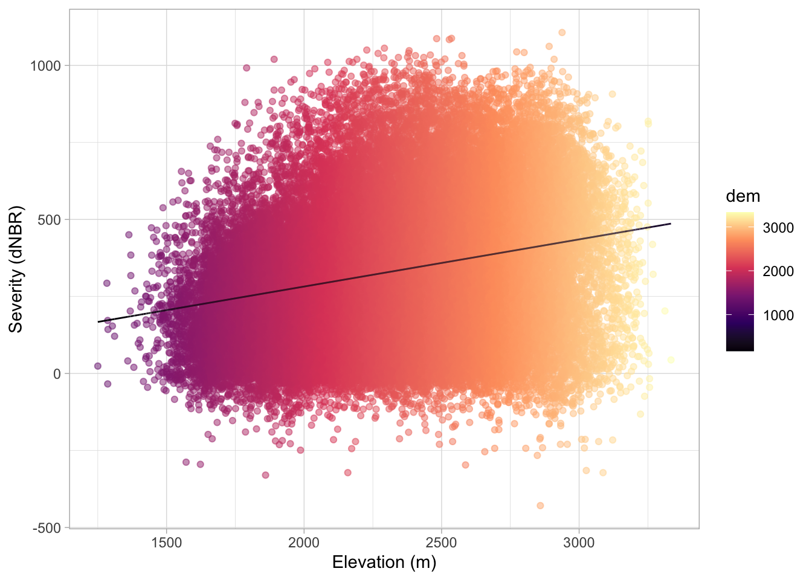
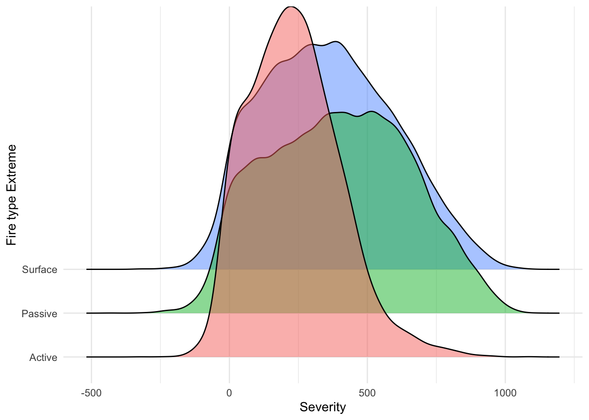
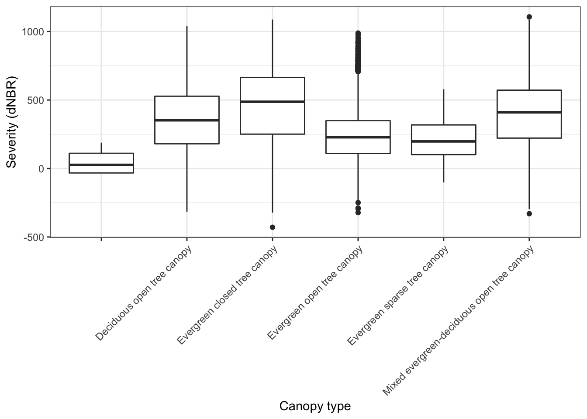

Chapter 5 Data visualization
Install packages tidyverse and viridis
## ── Attaching packages ─────────────────────────────────────── tidyverse 1.3.1 ──## ✓ ggplot2 3.3.3 ✓ purrr 0.3.4
## ✓ tibble 3.1.1 ✓ dplyr 1.0.5
## ✓ tidyr 1.1.3 ✓ stringr 1.4.0
## ✓ readr 1.4.0 ✓ forcats 0.5.1## ── Conflicts ────────────────────────────────────────── tidyverse_conflicts() ──
## x dplyr::filter() masks stats::filter()
## x dplyr::lag() masks stats::lag()## Loading required package: viridisLiteConnect to database ‘severity’ and create tables
severity_db <- dbConnect(drv = RSQLite::SQLite(),
"/Users/kiplingklimas/Box/Lab_Group/Kipling/Classes/WILD6900_EcoRepSci/Term_project/Term_project/database/severity.db")
severity <- dbGetQuery(severity_db, "SELECT * FROM severity;")
forest_behavior <- dbGetQuery(severity_db, "SELECT * FROM forest_behavior;")
forest_risk <- dbGetQuery(severity_db, "SELECT * FROM forest_risk;")
forest_structure <- dbGetQuery(severity_db, "SELECT * FROM forest_structure;")
forest_topo <- dbGetQuery(severity_db, "SELECT * FROM forest_topo;")
forest_veg <- dbGetQuery(severity_db, "SELECT * FROM forest_veg;")
nf_behavior <- dbGetQuery(severity_db, "SELECT * FROM nf_behavior;")
nf_risk <- dbGetQuery(severity_db, "SELECT * FROM nf_risk;")
nf_structure <- dbGetQuery(severity_db, "SELECT * FROM nf_structure;")
nf_topo <- dbGetQuery(severity_db, "SELECT * FROM nf_topo;")
nf_veg <- dbGetQuery(severity_db, "SELECT * FROM nf_veg;")This is fire severity dataset shows the relationship between severity measurements and a variety of predictive variables including topographic, vegetation, structural and derived risk indices. Data was differentiated between forest and non-forest points to compare severity relationships between forests and non-forest landcover systems.
Simple scatter plot of forest severity by elevation (m)
forest_topo %>%
left_join(severity, by = "severity_id") %>%
select(dem, severity) %>%
ggplot(aes(x = dem, y = severity)) +
geom_point() +
labs(y = "Severity (dNBR)", x = "Elevation (m)") +
theme_light()
Density curves of fire type extreme by severity
forest_behavior %>%
left_join(severity, by = "severity_id") %>%
mutate(ftypeE = case_when(
ftype_E == 3 ~ "Surface",
ftype_E == 4 ~ "Passive",
ftype_E == 5 ~ "Passive",
ftype_E == 6 ~ "Active",
ftype_E == 7 ~ "Active",
)) %>%
ggplot(aes(x = severity, color = ftypeE)) +
geom_density() +
theme(axis.text.x = element_text(angle = 45, hjust = 1)) +
labs(y = "Density", x = "Severity") 
Density curves of fire types
forest_veg %>%
left_join(severity, by = "severity_id") %>%
filter(!is.na(severity_id)) %>%
ggplot(aes(x = NVCSsubclass, y = severity)) +
geom_boxplot() +
theme(axis.text.x = element_text(angle = 45, hjust = 1)) +
labs(y = "Severity (dNBR)", x = "Vegetation type") 